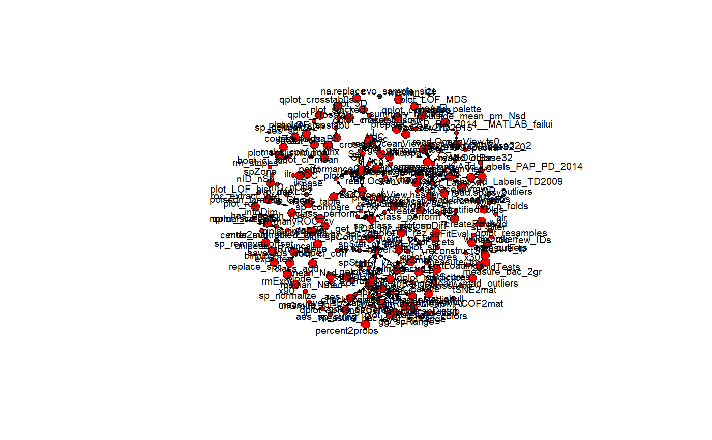

Extension for `hyperSpec` and convenience functions
[+] - function is well described.
[!] - a description is incomplete and needs revision.
Functions in spHelper by topic
Cross-validation
Component analysis / Spectroscopy
sortLoadings
GaussAmp
getScores
infoDim
qplot_infoDim
whichOutlier
Spectroscopy / <code>hyperSpec</code>
hy2mat
read3csv2hy
hyAdd_Labels_TD2009
Plotting
qplot_kAmp
qplot_kSp
qplot_kSpFacets
qplot_confusion
qplot_spStat
plot_spDiff
subt
qplot_infoDim
reconstructSp
Regular expressions
regcapturedmatches
regexp2df
Various
bru
fCap
make_firstCapitals
list_functions
hyDrop_NA
Examples
# List all functions in package: list_functions()#> Functions in spMisc (0.0.17) #> 1 %!in% #> 2 %.+.% #> 3 %++% #> 4 %if.NULL% #> 5 %if_null% #> 6 %if_null_or_len0% #> 7 %NOTin% #> 8 all_na_columns #> 9 all_na_rows #> 10 bru #> 11 bru_n #> 12 bru0 #> 13 class_add #> 14 clc #> 15 clear #> 16 clear_all #> 17 clear_class #> 18 clear_except #> 19 clear_except_class #> 20 clear_fun #> 21 clear_hidden_only #> 22 corr_vec2mat #> 23 Duration #> 24 eval_ #> 25 fCap #> 26 file2text #> 27 fixed_to_regexp #> 28 fullfile #> 29 getVarValues #> 30 html_add_line_to_head #> 31 html_enable_favicons #> 32 ifFALSE #> 33 indMatrix #> 34 isFALSE #> 35 list_AddRm #> 36 list_functions #> 37 make.filenames #> 38 na.replace #> 39 nDiag2nTri #> 40 nTri2nDiag #> 41 open_wd #> 42 printDuration #> 43 rbind_df_in_list #> 44 regcapturedmatches #> 45 regexp2df #> 46 rep_cols #> 47 rep_mat #> 48 rep_rows #> 49 revalueMatrix #> 50 simCorrVars #> 51 sort_colMax #> 52 sort_colSums #> 53 sort_descOnDiag #> 54 sort_rowMax #> 55 sort_rowSums #> 56 st01 #> 57 stMinMax #> 58 time_elapsed #> 59 visNetwork_ #> 60 which.in #> 61 which.in.col #> 62 which.in.diag #> 63 which.in.offdiag #> 64 which.in.row #> 65 which.in.trilow #> 66 which.in.triupp #> 67 which.max.all #> 68 which.max.perCol #> 69 which.max.perRow #> 70 which.min.all# Plot structure of functions inside the package: require(sna) require(mvbutils) pkgFW <- mvbutils::foodweb(where="package:spHelper", cex=0.7, charlim=60)sna::gplot(pkgFW$funmat, g = 9, jitter = T, # mode = "mds", label.cex = .6, diag=TRUE, vertex.cex=1:2, displaylabels=TRUE, label.bg="gray90")#>#>#>plotc(ObjectName[,,500],model = spc~Integration_time)#> Error in is(object, "hyperSpec"): object 'ObjectName' not found